<
>
1936
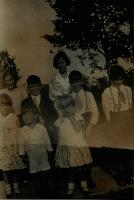 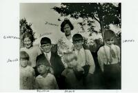
1937
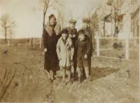 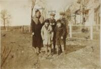 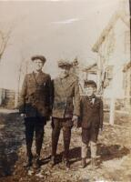
1938
1939
1941
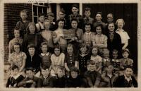
1942
1944
1945
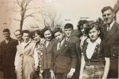
1946
1949
1950
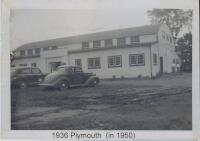
1952
1953
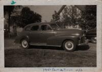 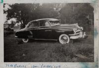
1954
1955
1956
1957
1958
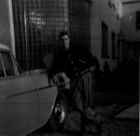
1959
1960
1961
1962
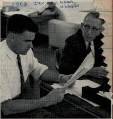
1963
1964
1965
1966
1968
1969
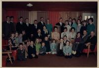 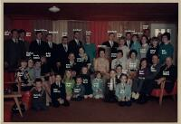
1970
1971
1972
1973
1974
1975
1976
1977
1978
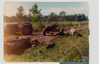
1979
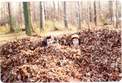 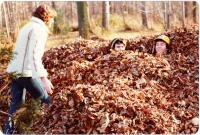
1980
1981
1983
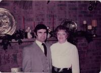
1985
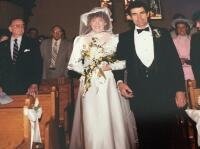 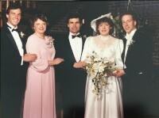 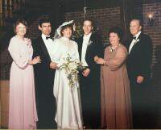 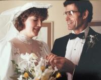 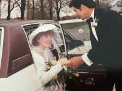 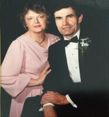 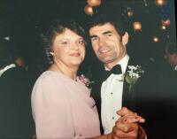
1986
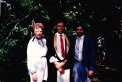
1987
1988
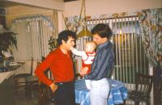 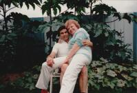
1989
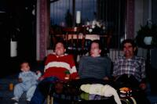
1990
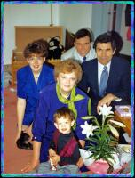
1992
1997
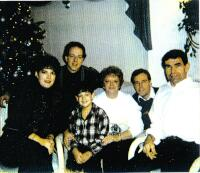
1998
2000
2002
2003
2004
2005
2006
2010
2012
2013
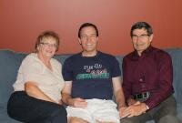
2014
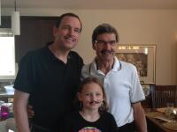
2015
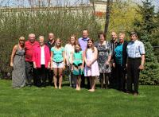
2017
2018